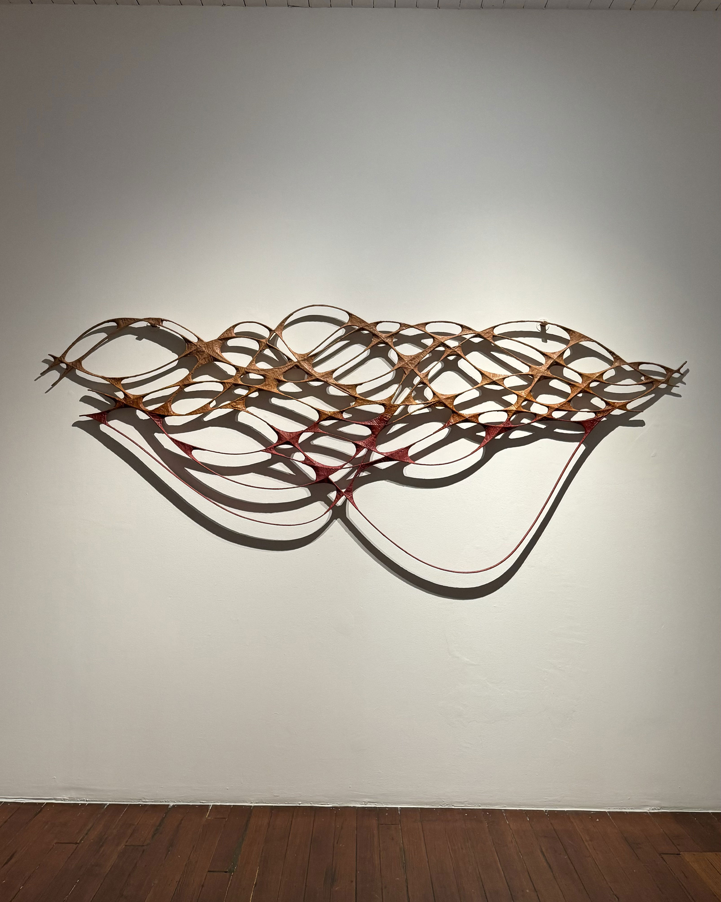

Taking a Dip
 Talwar Gallery
Talwar Gallery

'Taking a Dip' is almost defined by what is not there. Empty spaces enclosed by an armature of steel wrapped in muslin appear like a river delta or suggesting a colony of microscopic cells in formation. While its shadow appears to levitate the work off the wall, the rich earth tones, dyed into muslin from pomegranate and madder root, impart an organic quality to the work.